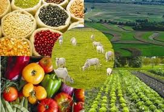

El Suelo y sus Recursos Agropecuarios

¿Qué es?
El suelo es un componente fundamental del ambiente, natural y finito, constituido por minerales, aire, agua, materia orgánica, macro y micro-organismos que desempeñan procesos permanentes de tipo biótico y abiótico, cumpliendo funciones vitales para la sociedad y el planeta.
Recursos Agropecuarios
Los recursos agropecuarios se dividen en agricultura y ganadería. Son los bienes provenientes de la actividad agrícola y pecuaria, mediante el cultivo de los suelos y las actividades pecuarias.
Función
El suelo lleva a cabo funciones ecosistémicas centrales, como la producción de alimentos y de biomasa, el reciclaje de nutrientes o el sostenimiento de la biodiversidad de los ecosistemas terrestres.
Recursos Agropecuarios
La función principal de los recursos agropecuarios es la producción de alimentos para satisfacer las necesidades de la población mundial.
Tipos
El Suelo
Los cuatro tipos de suelos se clasifican en (1) arenosos; (2) limos; (3) suelos francos y (4) arcillosos o barros. Esta clasificación se basa en el tamaño de las partículas que tiene cada tipo de suelo.
Recursos Agropecuarios
1. Ganadería: producción de animales domesticados para carne, leche, huevos, lana, etc. 2. Agricultura: cultivo de plantas para alimentación humana o animal, por ejemplo, trigo, maíz, verduras, frutas, etc. 3. Pesca: extracción de animales acuáticos para su consumo humano o animal. 4. Silvicultura: gestión de recursos forestales para la producción de madera y otros productos forestales. 5. Apicultura: producción de miel y otros productos derivados de las abejas. 6. Acuicultura: cultivo de animales acuáticos para el consumo humano o animal, como peces, crustáceos, moluscos, etc. 7. Avicultura: producción de aves domésticas para carne, huevos y otros productos avícolas. 8. Horticultura: cultivo de plantas para producción de hortalizas y otros productos frescos como flores y plantas ornamentales. 9. Ganadería intensiva: la producción de animales en condiciones controladas (es decir, en cautiverio) para su uso comercial.
Importancia:
El suelo es el fundamento del sistema alimentario: 95% de nuestros alimentos proviene del suelo. Nuestros suelos son la base de la agricultura y el medio en el que crecen casi todas las plantas productoras de alimentos. Si están saludables, producen cultivos sanos que a su vez nutren a las personas y los animales.
Recursos Agropecuarios
Los recursos agropecuarios son muy importantes para el desarrollo sostenible de las comunidades. Estos recursos incluyen la tierra, el agua, las semillas, los cultivos, los animales y otros recursos naturales que se utilizan para producir alimentos, fibras y materiales de construcción. La agricultura y la ganadería son actividades fundamentales para la producción de alimentos, lo que las convierte en fuente de ingresos para los productores y en una garantía de seguridad alimentaria para la población.
Para Más Info:
Suelo
Recursos Agropecuarios